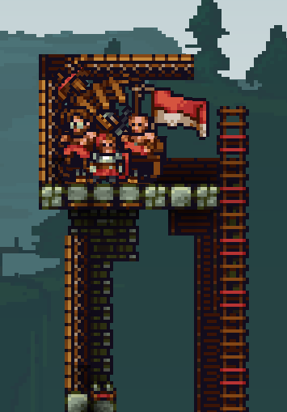
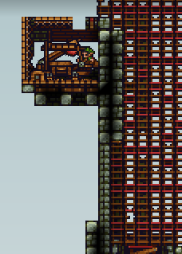

Chapter 5 Playing CTF

5.1 Dropping resupplies (dropping mats)
Every time you respawn, you should change on your tent/ballista to builder and back to knight. This way you drop 100 wood and 30 stone (resupplies) and your builders will love you. It may not seem like a lot, but it really helps your builders.
5.2 Buying items
There is a lot of items to buy in CTF. The more people you kill, the more coins you gain. There's no much point in hoarding all the coins -- you lose some if you die.
5.2.1 Bombs
Most knights decide to buy bombs (knight shop, 25 coins). They're good for killing enemy builders and archers, especially when they try to escape from you.
Using them to bomb jump to the enemy base also is a very good strategy.
You can also use them in this way -- if only one block thick wall (not doors) seperates you from the enemy builder, you can kill the enemy through the block:
Good for killing builders ratting in your tower.
If you're protecting a builder in a situation like this, you should shield up - this way the bomb doesn't kill them:
5.2.2 Burgers
Burgers are also a decent item (quarters, also known as food shop, 20 coins). They heal you to full health. You can eat them quickly by pressing V. It's useful when you're fighting and don't have much health -- just eat a burger. Using them greatly improves your survivability.
5.2.3 Water bombs
They stun the enemy (knight shop, 30 coins). Good for stunning enemies when you're fighting several at once, or stunning archers/builders. Just stun anyone for easily kills. Countered if enemy has a sponge in inventory (as mentioned in the first chapter)
5.2.4 Sponges
If you have one in inventory (builder shop, 15 coins), you are stunned for shorter time when hit by a water bomb or water arrow. Sponges absorb up to 2 stuns before being destroyed. Good to buy if you know the enemy team has lots of archers spamming water.
5.2.5 Mines
Mines are good for securing important places in your base (knight shop, 60 coins), especially when your team is on the defense. Place at least 1 in flagroom (if enemies get in there, they will be killed by the mine)

Place one in tunnels as well -- ratting enemies in most cases don't notice them and die.

Placing them next to enemy doors is good as well

5.2.6 Kegs
Very good explosive (knight shop, 120 coins). Good for destroying enemy structures.
Don't fight enemies while holding it -- losing a keg is bad for your team.
Getting yourself launched from a catapult with a keg is a good tactic as well.
Kegs, aside from exploding after 6 seconds, explode on impact if they're lit and have enough velocity.
Try to not stockpile a lot of kegs in one spot -- kegs can chain explode, so if an enemy gets there somehow, they'll be able to use up all of the kegs. Don't put kegs in your tower either.
5.2.7 Ballista
Good siege vehicle (siege shop, 200 coins), can be bought if you've got a lot of money. It lets people respawn on it, so I recommend putting it on top of your tower.

5.2.8 Catapult
Another good siege vehicle (siege shop, 80 coins) -- lets you shoot people with it. Place on top of your tower.

5.2.9 Arrows for your archers
If you know that you have any good archers in team, you can buy them various arrows, such as fire arrows (especially if enemies got any big wooden structures), water arrows (for stunning enemies) or bomb arrows (for destroying enemy siege vehicles or structures).
5.3 Teamwork
Aside from dropping mats, there's some other stuff you should do.
5.3.1 Protect your builders
Protect your builders that are trying to push the enemies and attack their base. Stay with them, kill enemies that try to attack them.
However, if the builder is trying to rat into the enemy base and places doors like in the gif below, leaving him to fight knights isn't a good idea.
In the gif, the knight opened the doors, trying to fight enemies, but died in the process. This causes the death of a builder in 99% situations. If the knight didn't try to attack and didn't die, he could've protected the builder from the builders with drills later on.
5.3.2 Catch bombs
Builders and archers have no way to protect themselves from bombs. Catch enemy bombs and throw them back quickly to save them from certain death.
5.3.3 Pick up materials
Pick up materials laying on the ground (order of importance: gold > stone > wood) and deliver them to a safe spot or to the closest builder. Do this especially after killing enemy builders.
5.4 On the defense
While you're defending yourself from enemies pushing your tower, you should keep some stuff in mind. Some of these apply to other situations as well.
5.4.1 Focus on the builder
Kill the builder at all costs. They're the most dangerous -- without them, it's much harder for enemy knights to get inside your base.
5.4.2 Mass-keg
You can keg the enemies if there are many of them. However, keep in mind that the enemies could catch it and use it against your tower -- so sometimes (if you see a good player that could catch, for example) it's good to kill yourself with the keg.
5.4.3 Catch enemy kegs
If you're quick enough, you can catch enemy kegs by jumping and spamming C when the keg is about to hit the ground.
Mostly applies to being on the offense - the enemy team may try to mass-keg you.
5.4.4 Slash ballista bomb bolts
You can slash ballista bomb bolts with good timing. Greatly helps if you're under heavy siege.
5.4.5 Shield enemy bomb arrows
You should shield enemy bomb arrows - especially if they're aimed at weak points in your tower or the flagroom
5.5 On the offense
5.5.1 Multi bomb jumps
Aside from 1-bomb bomb jumps, you may sometimes want to use multi bomb jumps to get to the enemy base:
2 bombs (1st bomb on ground, 2nd in hand):
3 bombs:
- Place 1st bomb on ground
- Light and put 2nd bomb in inventory
- Light 3rd bomb and replace it with the one in your inventory
5.5.2 Enemy tunnels
When you get to the enemy tunnel, constantly double slash it. This way, if any enemies go through it, you kill them easily (they're stunned from tunnel travel). In some cases, if someone travels and you don't have a double slash charged, you can use a single slash
If you're certain that they don't have a sawtrap on their other tunnels, you can also try using them to get to their base.
5.5.3 Enemy siege vehicles
Generally, if it's a catapult, you should just destroy it (easy money), unless it still has wheels attached and you can use it to hurt the enemies. If you have enough time, capture it.
As for ballistas, depends on the situation. Generally, if you're safe on the enemy ballista, and no enemies are coming, capture it. If there are lots of enemies trying to get it back -- swap to builder on it and block enemies from coming. If you can't secure the ballista, destroy it as a builder (5 coins per pickaxe hit as well).
5.5.4 Keg jump
Bomb jumping with a keg in your hand is a decent strategy which allows you to hurt the enemy structures significantly.
5.6 Random tricks
5.6.1 Sawjump
Bombs explode when they get destroyed. If bombs explode at the same moment, you can make a pretty awesome bombjump. Saws are used for this. Works like this:
You can also do it with holding a keg in hand to get to the enemy base.
Another variation includes holding a crate with a builder in it.
5.6.2 Keg + waterbomb (Hadouken kegs)
This also applies to TDM. If you explode a water bomb on a keg (with enough momentum) the keg will quickly go forward and explode on impact. Can be done mid-air as well if done quickly enough.
Can be used to hurt enemy structures -- enemies most likely won't catch the keg.
5.6.3 Mine + bomb
Mines need to stay still to be able to deploy -- so you can't deploy them in mid air. However, you can deploy one on top of your enemy tower, and then push it forward with a bomb or a waterbomb.
5.6.4 Hitting enemies at specific door angles
In situations like in the gif below, you're not able to slash the builder due to the door being there. Doors absorb damage from slashes. To avoid this, you want to do a two-angled slash so that the arc of the slash doesn't hit the door -- slash away and then move your cursor from the below to the right. This way you'll be able to damage the builder without hitting the door.
Some more gifs demonstrating this with g_debug 1 turned on to show the slash arc:
Opposite of the gif above (switched places):
Opening a single door and slashing downwards to not hit the top door:
Skipping door:
Slashing through a gap when there's a door -- slight jump so that your slash doesn't hit the door and is able to hit the enemy:
Slashing through a gap when there's a door downwards:
Slashing through a gap when there's a door upwards (note that you need some space):
5.6.5 Slashing through one block gaps
You can slash through one block gaps.
In case the gap is under you, you want to slash slightly to the side. This is a bit confusing, but it's due to how slash arcs work. You have more range when slashing sideways because of where the slash hitbox is attached to.
5.6.6 Using 360 slashes to damage multiple doors
Due to the way slashes work against doors and slash arcs, if you keep slashing two doors without moving your cursor, you will only damage one of them. However, if you move your cursor around your character (360 degree slashes) you will be able to damage both doors.